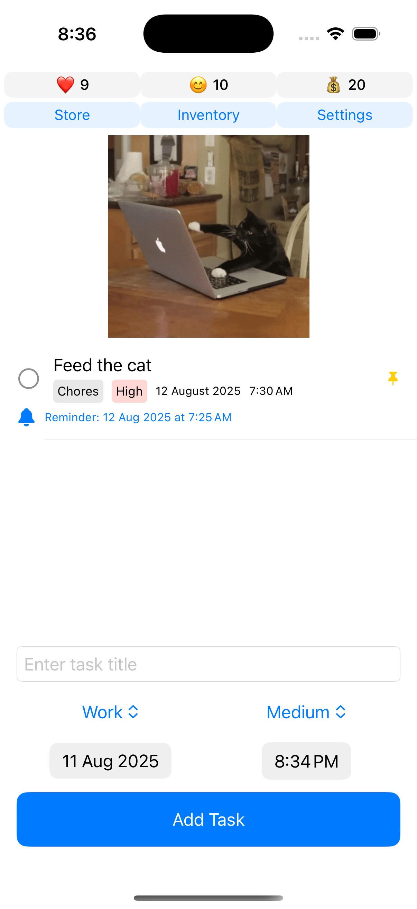
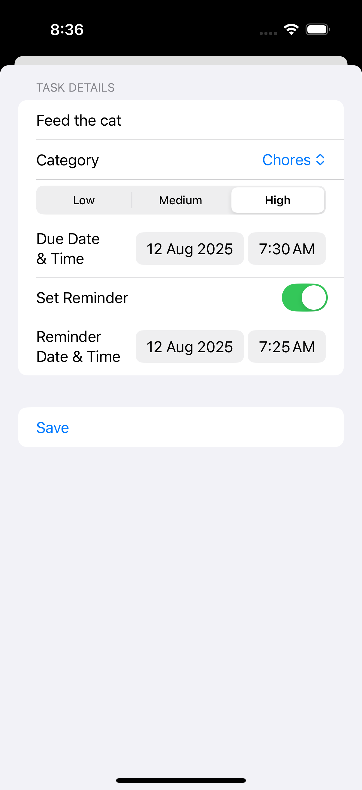
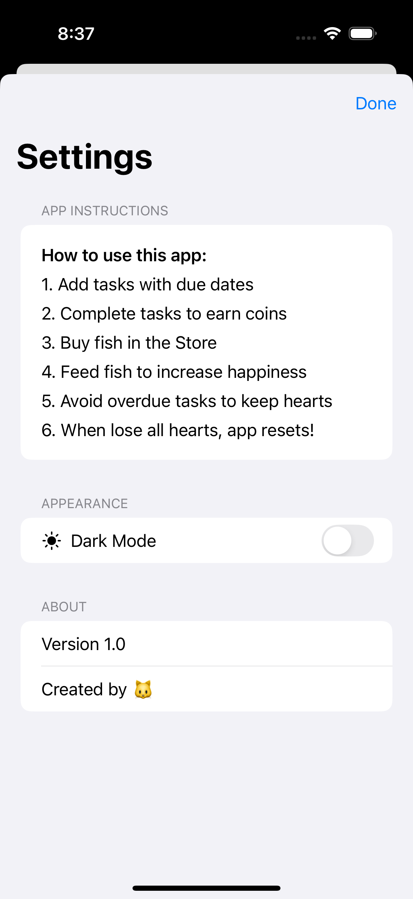

Cat To Do App
A cat-themed SwiftUI task manager:
1. SwiftUI Architecture:
- Used @StateObject for TaskViewModel persistence
- Implemented @EnvironmentObject for shared TaskManager state
- Applied @AppStorage for Dark Mode preference persistence
- Managed task objects with NSManagedObjectContext
- Implemented NSFetchedResultsController for effiecient updates
- Custom UNUserNotificationCenterDelegate for foreground/background handling
- Deep linkage via notification payloads
- Notification rescheduling on app foreground
- Used DispatchQueue.main.asyncAfter for delayed initialization
- Implemented thread-safe notification handling
- Dynamic color scheme switching


